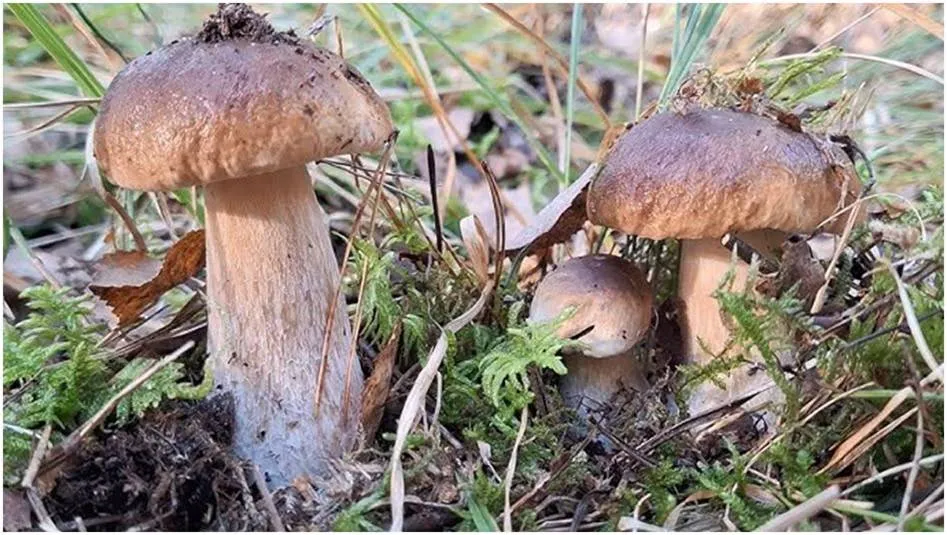
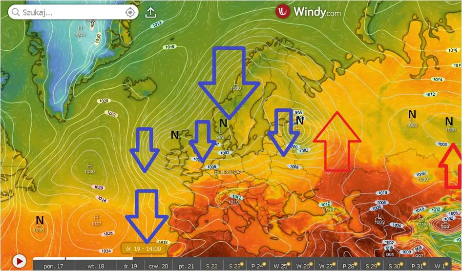
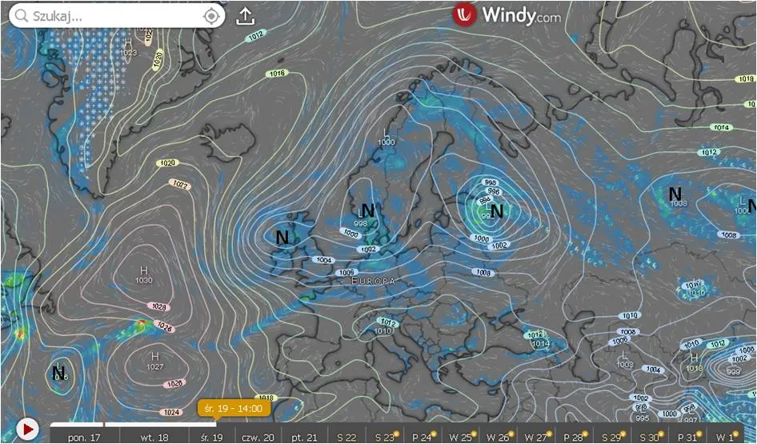

Leniwy huragan europejski.
Leniwy huragan europejski.
Gwałtowne zjawiska powstają na styku obszarów ciepłych i zimnych. Mówimy, że jest tam duży gradient, czyli na małej odległości występują duże różnice. Na mapach meteo widać to po gęstości linii np. ciśnienia. Na czwartej mapce siły wiatru widać dokładnie linie ciśnienia, izobary, ich gęste ułożenie to sztorm. Na lądzie też będzie dynamicznie.
Mamy nietypowy układ cyrkulacji pod koniec lata. Z powodu zimnego oceanu i małego gradientu w okolicach zwrotnikowych nie pojawił się jeszcze żaden huragan na Atlantyku i nie wyrówanał energii termicznej miedzy południem, a północą. Po ludzku na południu nie ma chłodzić, bo jest chłodno. Woda u wybrzeży Afryki Zwrotnikowej ma 21 C, szału nie ma.
Tymczasem brak chmur nad Morzem Śródziemnym rozgrzał basen, ten basen i kraje Europy południowej. Wielki kontrast termiczny mamy między Europą południową i północną i to właśnie powstaje tajemniczy układ trzech niżów, który roboczo nazwałem Leniwym Huraganem Europejskim. Niż to wielki lejek kręcący sie w lewo, podczas jego wirowania olbrzymie masy wilgotnego powietrza wyrzucane są siłą odśrodkową na zewnątrz a wewnątrz gwałtownie spada ciśnienie.

Niewidzialna para wodna podczas słonecznych dni nasycała atmosferę nad Europą i w chwili spadku ciśnienia zdolność powietrza do magazynowania wilgoci radykalnie maleje. Przezroczysta para staje się cieczą tworząc najpierw małe cząsteczki aż w końcu ulewny deszcz. Chmury odcinają z góry dopływ słonecznego ciepła, opadające krople chłodzą powietrze wokół siebie, temperatura i ciśnienie lawinowo spada i mamy, to co mamy: jesienna pogodę.

Niewykluczone, że przy ochładzaniu się Atlantyku ten schemat nad Europą stanie się stałym elementem gry jak wcześniej huragany. Oczywiście nie możemy liczyć na spektakularną, gwałtowną zmianę schematu, ale mechanizm wydaje się bardzo logiczny. Wszechświat nie znosi pustki, a do wymieszania się cyrkulacji między północą a południem dojść musi. Prognozowane przeze mnie susze zostaną w ten sposób zażegnane, ponieważ do naszych cyrkulacji trafi dużo wilgoci z północnego Atlantyku i Morza Śródziemnego podczas letnich upałów. Czyżby cyklicznie jak przed kilkoma dekadami powrócił czas na obfite grzybobranie? Mamy niby sezon huraganów na Atlantyku, ale na Ocenie spokojnie. Jakby jakiś kosmiczny strażak ugasił pożar planety tlący się w słabych umysłach podatnych na ruchome, kolorowe obrazki. Zapraszam po więcej: https://pawelklimczewski.pl/#huragany
Paweł Klimczewski